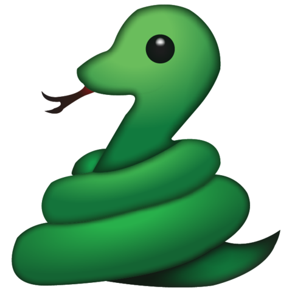
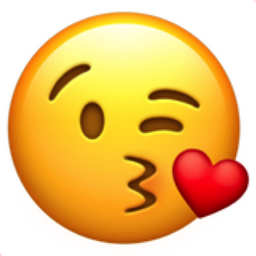

JAR EMOJI"
PROGRAM: Adobe Illustrator
DATE:September 11, 2018
Home
Project.1
Project.2
Resume
About
JAR EMOJI"
PROGRAM: Adobe Illustrator
DATE:September 11, 2018
THE PROCESS
I created a new document file that has 3 artboards.
Then I thought of what emoji's I want to do.
What I thought of was
a devil from a video game called "Cuphead",
a snake,
and a kissing mickey mouse emoji.


The tools I used to create my emoji is the pen tool and a brush tool with a gradient effect.
What made my emoji look nice is the shadowing
I applied to make it more realistic not plain.
Task
- 3 Different artboards 600px by 600px
- Shapes
- Pen Tool